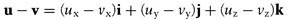

Vector Functions and Operators
The functions and overloaded operators that follow are useful in performing operations with two vectors, or with a vector and a scalar, where the vector is based on the Vector class.
Vector Addition: The + Operator
This addition operator adds vector v to vector u according to the formula
Here's the code:
inline Vector operator+ (Vector u, Vector v)
{
return Vector(u.x + v.x, u.y + v.y, u.z + v.z);
}
Vector Subtraction: The - Operator
This subtraction operator subtracts vector v from vector u according to the formula

Here's the code:
inline Vector operator-(Vector u, Vector v)
{
return Vector(u.x - v.x, u.y - v.y, u.z - v.z);
}
Vector Cross Product: The  Operator Operator
This cross product operator takes the vector cross product between vectors u and v, u x v, and returns a vector perpendicular to both u and v according to the formula
The resulting vector is perpendicular to the plane that contains vectors u and v. The direction in which this resulting vector points can be determined by the righthand rule. If you place the two vectors, u and v, tail to tail as shown in Figure A-7 and curl your fingers (of your right hand) in the direction from u to v, your thumb will point in the direction of the resulting vector.
In this case the resulting vector points out of the page along the z-axis, since the vectors u and v lie in the plane formed by the x- and y-axes.
If two vectors are parallel, then their cross product will be zero. This is useful when you need to determine whether or not two vector are indeed parallel.
The cross product operation is distributive; however, it is not commutative:
Here's the code that takes the cross product of vectors u and v:
inline Vector operator^ (Vector u, Vector v)
{
return Vector( u.y*v.z - u.z*v.y,
-u.x*v.z + u.z*v.x,
u.x*v.y - u.y*v.x );
}
Vector cross products are handy when you need to find normal (perpendicular) vectors. For example, when performing collision detection, you often need to find the vector normal to the face of a polygon. You can construct two vectors in the plane of the polygon using the polygon's vertices and then take the cross product of these two vectors to get normal vector.
Vector Dot Product: The * Operator
This operator takes the vector dot product between the vectors u and v, according to the formula
The dot product represents the projection of the vector u onto the vector v as illustrated in Figure A-8.
In this figure, P is the result of the dot product, and it is a scalar. You can also calculate the dot product if you the know the angle between the vectors:
Here's the code that takes the dot product of u and v:
// Vector dot product
inline float operator*(Vector u, Vector v)
{
return (u.x*v.x + u.y*v.y + u.z*v.z);
}
Vector dot products are handy when you need to find the magnitude of a vector projected onto another one. Going back to collision detection as an example, you often have to determine the closest distance from a point, which may be a polygon vertex on one body (body 1), to a polygon face on another body (body 2). If you construct a vector from the face under consideration on body 2, using any of its vertices, to the point under consideration from body 1, then you can find the closest distance of that point from the plane of body 2's face by taking the dot product of that point with the normal vector to the plane. (If the normal vector is not of unit length, you'll have to divide the result by the magnitude of the normal vector.)
Scalar Multiplication: The * Operator
This operator multiplies the vector u by the scalar s on a component-by-component basis. There are two versions of this overloaded operator depending on the order in which the vector and scalar are encountered:
inline Vector operator*(float s, Vector u)
{
return Vector(u.x*s, u.y*s, u.z*s);
}
inline Vector operator*(Vector u, float s)
{
return Vector(u.x*s, u.y*s, u.z*s);
}
Scalar Division: The / Operator
This operator divides the vector u by the scalar s on a component-by-component basis:
inline Vector operator/(Vector u, float s)
{
return Vector(u.x/s, u.y/s, u.z/s);
}
Triple Scalar Product
This function takes the triple scalar product of the vectors u, v, and w according to the formula

Here, the result, s, is a scalar. The code is as follows:
inline float TripleScalarProduct(Vector u, Vector v, Vector w)
{
return float( (u.x * (v.y*w.z - v.z*w.y)) +
(u.y * (-v.x*w.z + v.z*w.x)) +
(u.z * (v.x*w.y - v.y*w.x)) );
}
|